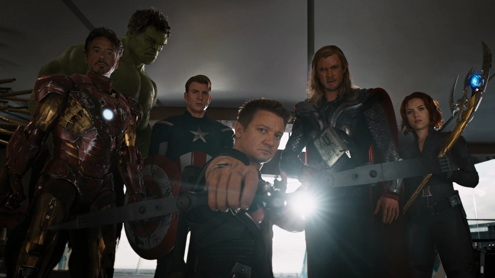
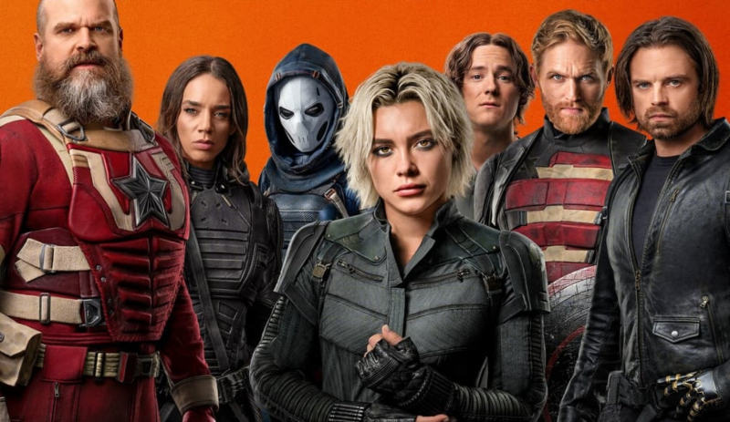
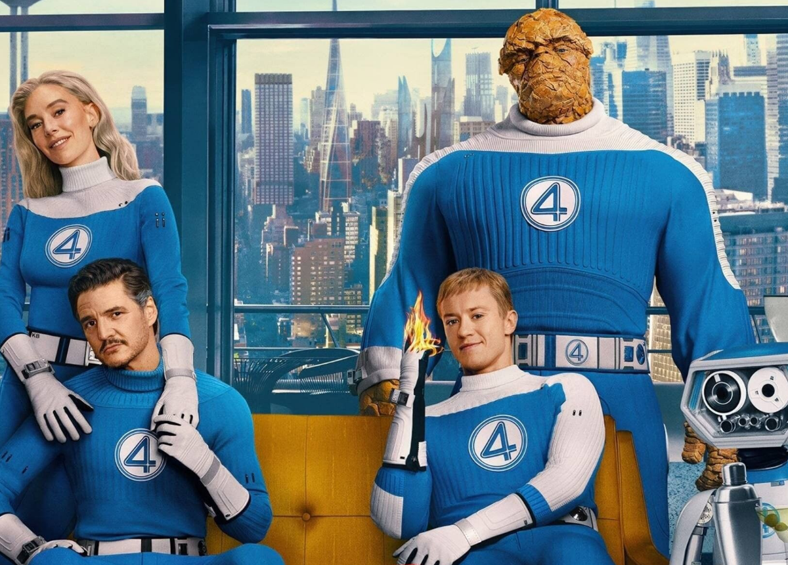
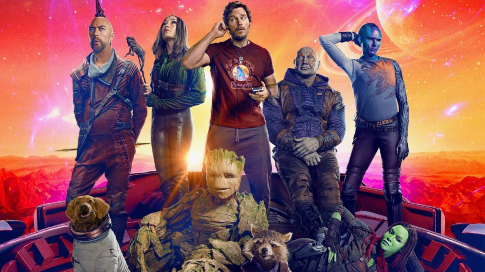

Heróis 🦸
Ao longo dos anos, o UCM apresentou diversos heróis que conquistaram
fãs ao redor do mundo. Nesta página, reunimos alguns dos principais personagens,
suas habilidades, histórias e momentos mais importantes dentro do universo Marvel.
Principais Vingadores

Os Vingadores são um grupo formado por alguns dos maiores heróis do planeta, reunidos
para enfrentar ameaças que nenhum deles conseguiria combater sozinho. Entre seus
principais membros estão Homem de Ferro, Capitão América, Thor, Hulk, Viúva Negra e
Gavião Arqueiro. Ao longo da Saga do Infinito, a equipe enfrentou grandes ameaças,
principalmente Loki, Ultron e Thanos.
Thunderbolts*

Os Thunderbolts são uma equipe formada por personagens com diferentes histórias e
habilidades, incluindo antigos agentes, heróis e indivíduos que já estiveram do lado
dos vilões. O grupo reúne personagens como Yelena Belova, Bucky Barnes, Red Guardian,
John Walker, Ghost e Taskmaster, formando uma equipe pouco convencional que trabalha
em missões de alto risco.
Quarteto Fantástico

O Quarteto Fantástico é uma equipe formada por Reed Richards, Sue Storm, Johnny Storm e
Ben Grimm. Após serem expostos a uma radiação durante uma missão, eles desenvolvem
habilidades especiais e passam a utilizar seus poderes para proteger o mundo. A equipe
é conhecida pela forte união entre seus integrantes e por suas aventuras envolvendo
ciência, espaço e outras dimensões.
Guardiões da Galáxia

Os Guardiões da Galáxia são uma equipe de heróis intergalácticos liderada por Peter Quill,
o Senhor das Estrelas. O grupo é formado por personagens como Gamora, Rocket, Groot e Drax,
que inicialmente se unem para impedir uma grande ameaça. Apesar de suas personalidades
diferentes, os Guardiões se tornam uma família e passam a proteger a galáxia.